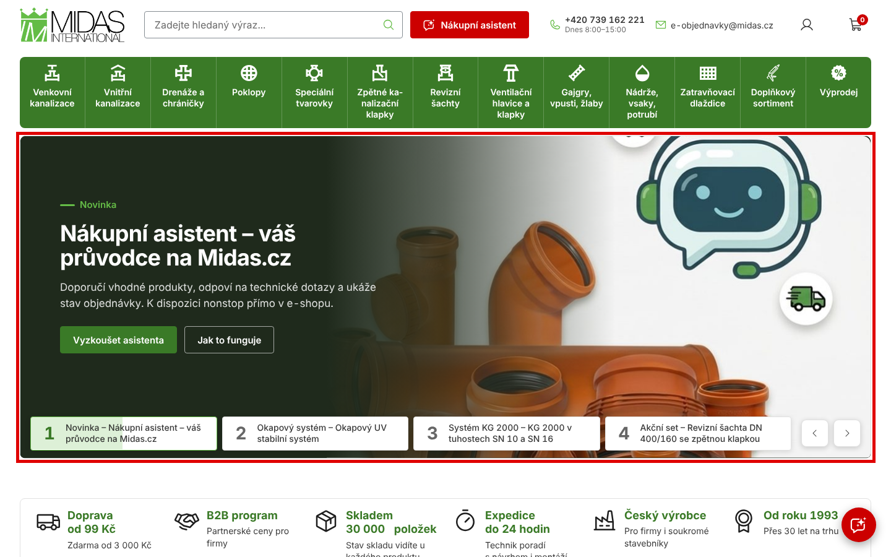

Úvodní synchronizace celého prototypu
Do repozitáře je poprvé přenesen kompletní prototyp Midas.cz ve stavu z artefaktu: homepage s tmavým hero sliderem (na mobilu akordeon s čísly 1–4), výpis kategorie se stránkováním a rozbalením podkategorií na mobilu, detail produktu s tlačítkem Porovnat, nová stránka Porovnání produktů, průchod košíkem, informační stránky z patičky a komponenty včetně cookie lišty a akčního modalu.
- Obrázky jsou v
_blob/s příponou a odkazují se relativně, takže stránky fungují na GitHub Pages. - Runtime
support.js(stejný jako u Ekokozy) načítá React z unpkg. - Nový rozcestník
index.htmlse všemi obrazovkami podle plátna. - Prázdný
.nojekyll, aby GitHub Pages zveřejnil i složku_blob/.
Soubory: Main.dc.html, Kategorie.dc.html, Detail.dc.html, Porovnani.dc.html, Kosik.dc.html, Udaje.dc.html, Kontrola.dc.html, Dekujeme.dc.html, Onas.dc.html, Kontakt.dc.html, ObchodniPodminky.dc.html, Reklamace.dc.html, Doprava.dc.html, Certifikaty.dc.html, Navody.dc.html, Gdpr.dc.html, Kariera.dc.html, LoginPopup.dc.html, CartPopup.dc.html, Footer.dc.html, FilterChip.dc.html, Breadcrumb.dc.html, CookieModal.dc.html, PromoModal.dc.html, canvas.json, support.js, index.html, .nojekyll, _blob/ (122 obrázků)
